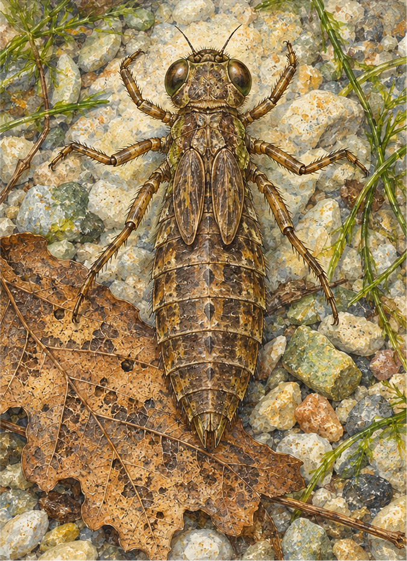
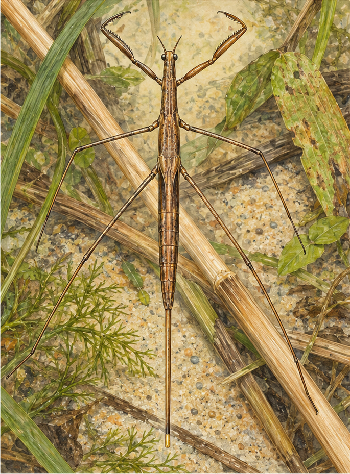

SZENTANNAI · VÍZI ÉLŐVILÁG
Fedezd fel a jelölők állatait!
Irányítsd a kamerát a lap egyik rajzára. Vizsgáld meg több oldalról az állatot, és határozd meg!


Két kép, két meghatározandó állat.
Nyomtatható képlapA kamera képe helyben, a böngészőben kerül feldolgozásra. A bemutató HTTPS webcímen, kameraengedéllyel működik. Androidon Chrome-ban, iPhone-on Safariban próbáld. A rajzhoz kötött nézetben a kép eltakarásakor az állat eltűnik. Az Elhelyezés a térben gombbal külön, körbejárható AR-nézetet indíthatsz támogatott telefonon.1. modell: NHM_Imaging / Natural History Museum, London. Forrás · CC BY-NC 4.0. Méret a bemutatóhoz igazítva.
2. modell: ffish.asia / floraZia.com. Forrás · CC0.